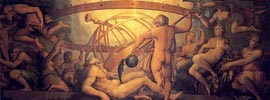

Уран, в античній міфології, найдавніший з грецьких богів. Уособлення небес, божество неба в давньогрецькому пантеоні. Прабатько гігантів, іриній, німф, гекатонхейров, велетнів-циклопів, Афродіти і титану Кроноса. Кронос народився від шлюбу бога неба Урана і богині землі Геї. Він піддався на вмовляння матері і оскопив свого батька Урана, щоб припинити нескінченні народження його дітей. Таким чином Кронос хитрощами скинув свого батька. Він позбавив Урана сили і відняв у нього владу.
Краплі крові Урана впали на землю і з них народилися невтомні богині помсти Еринії (Фурії) і змієногої велетні-гіганти. А богиня Ніч, під покровом якої здійснив свій злочин Кронос, народила йому в покарання цілий сонм чудовиськ. Ці жахливі божества: тапатіо - смерть, Еріда - розбрат, апатії - обман, Кер - знищення, Гіппос - сон, рій похмурих, важких снів. Також народилася не знає пощади богиня Немезида, як втілення відплати за скоєні злочини, і безліч інших божеств. Жах, чвари, обман, боротьбу і нещастя внесли вони в світ, де запанував на троні свого батька Кронос.
Повалення Урана відкрило можливість подальшої зміни поколінь богів і вдосконалення божественних володарів світу в дусі антропоморфізму, впорядкованості та правопорядку. Міф про Урані - свідоцтво архаїчних витоків класичної міфології. Небо і земля мисляться одним цілим, яке потім в космогонічному процесі поділяється на дві сутності. З них Уран - чоловіче начало, одночасно є і синівським початком, вторинним по відношенню до Геї. Уран потребує лоні землі - воспріемніце його плодоносної сили. Земля ж, переживши період бурхливого і мимовільного продовження роду, усуває Урана. Вона народжує потомство і вступає в інші шлюби, керуючись власними задумами і цілеспрямованої волею, що вказує на первинність саме міфології землі, а не неба.